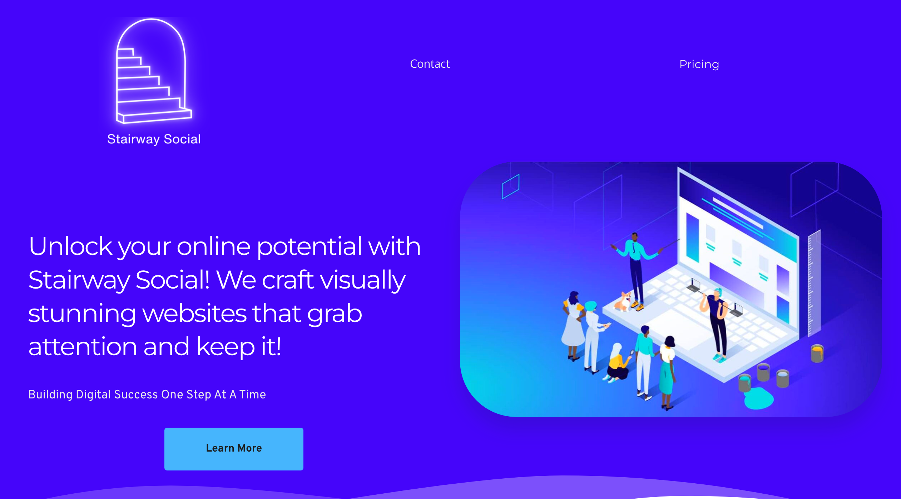
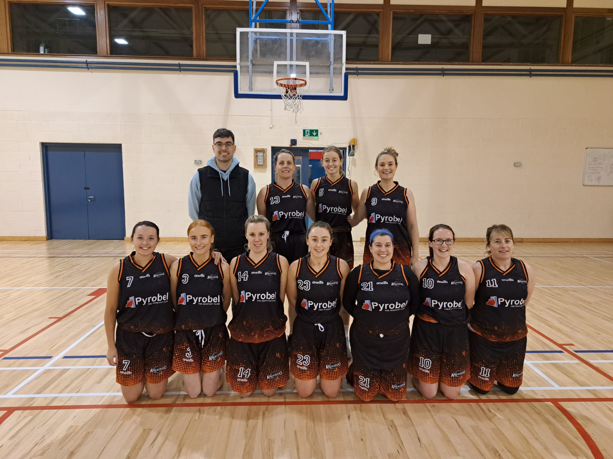

More About Me ....
Stairway Social
Two years ago, I teamed up with two of my friends to start our own company called Stairway Social. It's a web design and social media marketing business we began as a side hustle to learn new skills and earn some extra income. I work on the web design side of things and they focus on the marketing and sales calls.
Our goal is to help local businesses shine online. We're like a digital toolbox for these companies, creating their websites and managing their social media. It's exciting to see a small business grow because of the new website we built or the social media campaign we ran.
Starting Stairway Social has been a journey full of learning. The best part is the sense of achievement when all that hard work pays off, and you see your clients happy with the results. My friends and I bring different skills to the table, and when we combine them, we make something great for our clients.
Working on Stairway Social has honed my skills in a way that perfectly aligns with the demands of the technology consulting industry. It has taught me the art of client interaction—consulting with them to fully understand their needs and crafting tailored solutions to their problems. This experience has not only enhanced my technical proficiency but also sharpened my problem-solving and client management abilities, essential qualities for success in tech consulting.
Killester Basketball
Since I was 10, basketball has been a big part of my life and and my dedication to the sport has paralleled the commitment I bring to my professional career. I play on the ladies D2 team at my local club Killester . On the court with , I've learned the importance of agility, strategic thinking, and the power of collective effort, all attributes that have immensely contributed to my professional life.
In basketball, you have to watch what the other team is doing and be ready to change your plan in a moment. At work, I plan to do the same thing. Whether I'm playing as a guard or a forward in basketball, I bring the same leadership and energy to my job every day.
Playing basketball has shown me that when everyone brings their own skills to the team, we can do amazing things together. This is true for my work and college projects too. When we all work together, we come up with great ideas and get things done well.
I've included two pictures: one of me in the middle of a game, which shows how I tackle challenges head-on, and another of my whole basketball team, showing how I value teamwork at work just as much as I do in sports.
